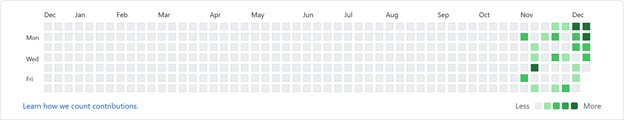
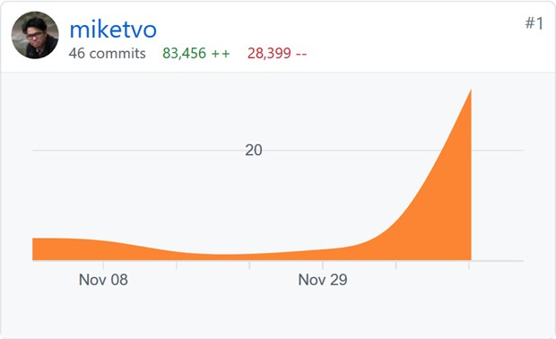
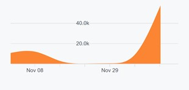
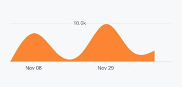

GitHub Audit Trail
Overview:

My website was built over a period of 43 days, starting from November 6th to December 18th, 2020. I started out without any knowledge of HTML/CSS and JavaScript but have improved my proficiency in all three languages by week 9 of Semester 2020C at RMIT University Vietnam. Though I still have much more to learn, I am now very confident in my understanding of web development thanks to the helpful Intro to IT tutorial sessions.
During the process, I have experimented with two HTML templates:
Howdy
This is my initial experimentations in web development. At this point, I did not have much content to add to my website, so it was mainly a learning experience.
Beckham
This is the template that I settled on for my website for its simplicity and lightweight. In the final version of my website, I have moderately modified all of the HTML and CSS files, but I have left the JavaScript files untouched, since I intend to keep my website light and easy to load on slow network connections.
Timeline:
- 06/11/2020 to 09/11/2020: Testing and familiarizing myself with web development.
- 10/11/2020 to 01/12/2020: Writing contents.
- 02/12/2020 to 18/12/2020: Finalizing design and uploading contents.
During this period, I have made in total 83456 additions and 28399 deletions in 46 commits (Subject to future updates). Detailed and up-to-date information can be accessed here

Graph 1. Commit frequency

Graph 2. Addition frequency

Graph 3. Deletion frequency

Author
Michael Tuong Minh Vo
I'm currently pursuing a Bachelor degree in Information Technology at RMIT University Vietnam (Student ID: S-3877562)
Contact me via my email